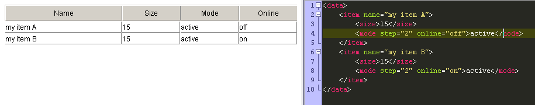

Custom loading types
dhtmlxGrid 1.6+ allows to customize the incoming data format in many ways. But still you may need to define some custom format. This can be done with relatively little effort.
For each new data format you need to defined 3 methods:
- grid._process_[type] - must process the incoming stream of data and separate it in rows;
- grid._process_[type]_row - takes the data related to rows and processes it;
- grid._get_[type]_data - must provide the way to locate the value of a column inside the data row .
For example, we have an XML in the following format:
<data>
<item name="my item A">
<size>15</size>
<mode step="2" online="off">active</mode>
</item>
<item name="my item B">
<size>15</size>
<mode step="2" online="on">active</mode>
</item>
</data>
The format of the used data doesn't fit for any of grid's XML format. One of possible solutions is to add XSLT transformation, which will convert the data to the format acceptable by the grid.
But if you have a lot of data in such custom format, making custom loading type appears to be more sensible.
The First step - selecting the data type name
The names xml, xmlA, xmlB, json, jsarray, csv are already taken, so any other name is valid.
Let's select "custom_xml" as the name of our type.
The Second step - defining the row level parser
The row parser function must separate the incoming data in rows and assign IDs to them.
In our case the data is the XML, so it is pretty simple to take necessary data by using XPath:
grid._process_custom_xml=function(xml){
this._parsing=true;
var rows = xml.doXPath("//item"); // get all row elements from the XML
for (var i = 0; i < rows.length; i++){
var id = this.getUID(); // the XML doesn't have native IDs, so we will generate custom ones
this.rowsBuffer[i]={ // store references to each row element
idd: id,
data: rows[i],
_parser: this._process_custom_xml_row, // the cell parser method
_locator: this._get_custom_xml_data // the data locator method
};
this.rowsAr[id]=rows[i]; // store ID reference
}
this.render_dataset(); // force the grid view update, after data loading
this._parsing=false;
}
The Third step - define the cell level parser
The cell parser must take the data for each column of the grid from the row related XML.
Before we implement its code, we need to make some draft - what data will be mapped for what column.
Column
|
data from xml
|
0
|
item@name
|
1
|
size
|
2
|
mode
|
3
|
mode@online
|
grid._process_custom_xml_row=function(r, xml){
var size = this.xmlLoader.doXPath("./size", xml)[0]; // get size sub tag
var mode = this.xmlLoader.doXPath("./mode", xml)[0]; // get mode sub tag
var strAr = [
xml.getAttribute("name"),
size.firstChild.data,
mode.firstChild.data,
mode.getAttribute("online")
];
// we don't need any custom attributes, so set just a plain array
r._attrs={};
for (j=0; j < r.childNodes.length; j++) r.childNodes[j]._attrs={};
//finish data loading
this._fillRow(r, strAr);
return r;
}
The Final step
Basically this is all that needs to be done. Now you can use the following method to load the data in the custom format:
grid.load(url,"custom_xml")

The last method which can be defined is Locator. It makes sense only if you plan to use smart rendering mode. This method is not necessary for operations in the standard mode (it is used to locate the data inside unparsed chunks).
The attached sample contains all used source code
© DHTMLX, 2008